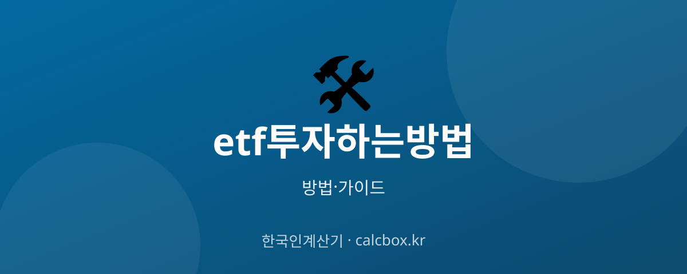

ETF 투자하는 방법 — 개념부터 계좌 개설·매수까지 초보 가이드
소액으로 분산 투자할 수 있어 인기인 ETF. 처음 시작하는 사람을 위해 개념부터 계좌 개설, 매수 절차까지 순서대로 정리했습니다. 투자 권유가 아닌 개념·절차 안내입니다.

ETF 투자 — 핵심부터 정리
ETF(상장지수펀드)는 여러 종목을 묶은 펀드를 주식처럼 거래소에서 사고파는 상품입니다. 지수·산업·원자재 등 다양한 대상에 소액으로 분산 투자할 수 있는 것이 특징입니다.
투자 흐름은 증권계좌 개설 → 투자 대상·ETF 선택 → 매수 → 관리입니다. 아래 내용은 특정 종목 추천이나 투자 권유가 아니라 개념과 절차를 이해하기 위한 안내입니다.
ETF 투자 시작하는 방법 (단계별)
- ETF 개념 이해 — ETF는 코스피200 같은 지수나 특정 산업·자산을 추종하는 펀드를 주식처럼 거래하는 상품입니다. 한 종목만 사도 그 안의 여러 기업에 분산 투자되는 효과가 있습니다.
- 증권계좌 개설 — 증권사 앱(MTS)에서 비대면으로 증권 계좌를 개설합니다. 신분증과 본인 명의 은행 계좌가 있으면 대부분 앱에서 몇 분 안에 만들 수 있습니다.
- 투자 대상과 ETF 선택 — 국내 지수, 미국 지수, 배당, 채권, 특정 산업 등 관심 대상을 정하고 그에 맞는 ETF를 찾습니다. 같은 지수라도 여러 운용사 상품이 있어 비교가 필요합니다.
- 비용·구조 확인 — 운용보수(총보수), 순자산 규모, 거래량, 추종 지수, 환헤지 여부 등을 확인합니다. 보수가 낮고 규모·거래량이 큰 상품이 일반적으로 관리하기 수월합니다.
- 매수 주문 — 증권사 앱에서 해당 ETF 종목을 검색해 수량과 가격을 지정해 매수합니다. 주식과 동일하게 실시간 시세로 거래되며 소량(1주)부터 매수할 수 있습니다.
- 정기 점검·분산 — 매수 후 한 상품에 몰아넣기보다 목적·기간에 맞게 분산하고, 주기적으로 비중을 점검합니다. 단기 시세에 흔들리기보다 장기 관점으로 접근하는 경우가 많습니다.
알아두면 좋은 팁
- ETF도 원금이 보장되지 않습니다. 지수·자산 가격이 내리면 손실이 날 수 있으므로 여윳돈 범위에서 시작하세요.
- 총보수(운용비용)와 순자산 규모, 거래량을 확인하세요. 규모가 너무 작거나 거래가 적은 ETF는 상장폐지·괴리 위험이 있습니다.
- 레버리지·인버스 ETF는 변동성이 매우 크고 장기 보유 시 손실이 누적될 수 있어 초보자에게는 권장되지 않습니다.
- 해외·환노출 ETF는 환율 변동 위험이, 국내 상장 해외 ETF와 해외 상장 ETF는 세금 체계가 다릅니다. 세금·환율도 함께 고려하세요.
- 한 상품에 전부 넣기보다 여러 자산에 나누고, 일정 금액을 정기적으로 투자하는 방식이 위험을 분산하는 데 도움이 됩니다.
ETF 정보는 어디서 확인하나요?
ETF의 구성 종목, 총보수, 순자산, 추종 지수 등은 각 운용사 상품 페이지와 증권사 앱에서 확인할 수 있습니다. 공시 정보는 한국거래소 등 공식 채널을 참고하세요.
투자 전 반드시 투자설명서와 상품설명서를 읽고, 본인의 투자 목적·기간·위험 감수 수준에 맞는지 스스로 판단하세요.
자주 묻는 질문 (FAQ)
Q. ETF는 주식과 뭐가 다른가요?
개별 주식은 한 회사에 투자하지만, ETF는 여러 종목을 묶은 펀드를 주식처럼 거래하는 상품입니다. 한 종목만 사도 분산 투자 효과가 있고, 운용사가 지수를 추종하도록 구성한다는 점이 다릅니다.
Q. ETF는 얼마부터 투자할 수 있나요?
ETF는 주식처럼 1주 단위로 거래되므로 상품에 따라 수천 원~수만 원의 소액으로도 시작할 수 있습니다. 다만 소액이라도 원금 손실 위험이 있으니 여윳돈으로 접근하세요.
Q. ETF는 원금이 보장되나요?
아닙니다. ETF는 추종하는 지수나 자산 가격에 따라 가치가 변하며 원금이 보장되지 않습니다. 특히 레버리지·인버스 상품은 변동성이 커 손실 위험이 큽니다. 투자 전 위험을 충분히 이해해야 합니다.